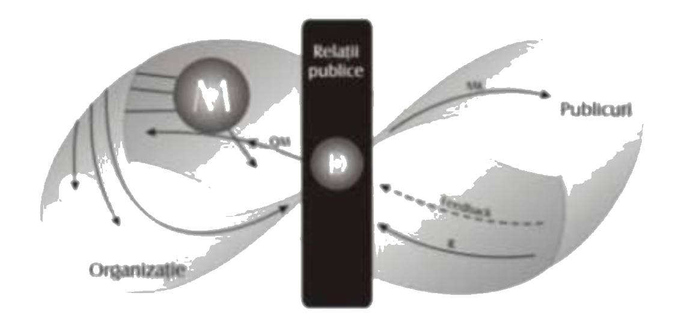

CUPRINS
COMUNICARE ȘI NEGOCIERE
Negocierile economice: sunt cele mai frecvent întâlnite în practică.
Acest gen de negocieri se referă la cele în care obiectivul final al
procesului vizează schimbul dintre bunuri şi contravaloarea acestora.
Interesele cu privire la calitatea de proprietar sau de beneficiar,
respectiv deţinerea de bunuri sau intrarea în posesia lor, sunt cele
care dau consistenţă mobilului negocierii economice. Obiectul supus
negocierii în acest caz poate fi un bun material, un bun spiritual sau
un serviciu.
În urma negocierilor economice, părţile interesate recurg la un dublu
schimb: una dintre ele oferă bunul sau serviciul, cealaltă oferă
contravaloarea. Contravaloarea bunului oferit poate consta în bani sau
în alte bunuri ori servicii.
Negocierile economice se pot încheia cu sau fără acorduri scrise.
Important de reţinut este caracterul definitiv al unei înţelegeri
obţinute pe calea negocierii economice. Odată executat schimbul între
cele două părţi, negocierea nu mai poate fi relansată sau repusă în
discuţie, raportul dintre obiectul supus negocierii şi părţile
interesate fiind stabil până la un eventual nou proces de negociere
economică.
„Negocierea însă nu-i război, dar nici pace, ci amândouă la un loc” -
comunicarea are la bază, în fond, talentul de a negocia, de a simţi ce
vrea celălalt, ce aşteaptă de la tine dar şi ceea ce poţi tu să oferi;
orice relaţie interumană are la bază comunicarea, capacitatea de a te
face înţeles de celălalt şi de a-i putea comunica, la rândul tău, ceea
ce el îşi doreşte să primească de la tine. Nu întotdeauna comunicarea
are la bază un schimb material, tangibil dar întotdeauna are la bază
înţelegerea, puterea cuvântului, atitudinea deschisă, flexibilă,
toleranţa şi puterea de a-l face pe celălalt să aibă încredere în
tine.
Negocierea “este un proces interacţional care implică două sau mai
multe entităţi sociale (persoane, grupuri, instituţii, organizaţii,
comunităţi) , cu interese neomogene ca intensitate şi orientare, în
schimburi reciproce de informaţii, schimburi reglementate de reguli
implicite şi/sau explicite, având menirea de a conduce la stabilirea
unui acord, l a transferul unor bunuri echivalente sau, în general, la
adoptarea unei soluţii reciproc acceptabile pentru o problemă care le
afectează interesele”
Negociem zilnic şi peste tot, în diferite posturi sau poziţii; de
aceea este destul de dificil de a scrie despre negocieri şi de a
defini termenul. Negocierea este o comunicare în ambele sensuri, care
duce la o înţelegere atunci când cele două părţi au interese comune
sau opuse. “ Negocierea este o cale fundamentală prin care obţinem
ceea ce dorim de la alţii“.
Relaţiile dintre negociere şi satisfacerea nevoilor îmbracă forma unor
tranzacţii care, de regulă, trebuie să fie reciproc avantajoase;
negocierea este o tranzacţie ale cărei condiţii nu au fost fixate.
Negocierea este un proces în care două sau mai multe părţi schimbă
bunuri sau servicii şi încearcă să fie de acord cu valoarea pe care
schimbul o are pentru ele. Negocierea este, probabil, cea mai folosită
strategie de rezolvare a conflictului intergrupuri.
În esenţă, negocierea este o formă de compromis. Negocierile efective
depind de modul în care are loc comunicarea între negociatori.
Negocierea reprezintă procesul de încheiere a unor convenţii,
contracte sau acorduri între o unitate şi un grup sau grupuri de
angajaţi, cu privire la ansamblul condiţiilor de muncă şi salarizare,
sau la o serie de garanţii sociale. Negocierea colectivă este
considerată drept un instrument de protecţie a salariaţilor, oferind
cadrul juridic adecvat pentru a exercita asupra patronatului o
influenţă în recunoaşterea drepturilor de personal.
PRINCIPII ALE NEGOCIERII:
- PRINCIPIUL FLEXIBILITĂŢII - acest principiu este fundamental deoarece în negocieri nu exista negocieri care sa se repete identic. Din aceasta cauza nu exista soluții universal valabile, singura constantă fiind capacitatea negociatorului de a fi flexibil.
- PRINCIPIUL ANTICIPĂRII - se referă la modul de anticipare a evoluției procesului de negociere. Capacitatea de anticipare se poate manifesta atât în faza de pregătire cat şi în timpul desfășurării negocierilor.
- PRINCIPIUL OBŢINERII DE INFORMAŢII - implică talentul de a vorbi puţin, a fi răbdător şi a asculta explicaţiile partenerului. Important este să nu se formuleze răspunsuri şi nici întrebări până nu se analizează profund sensurile directe, dar mai ales indirecte ale celor spuse.
- PRINCIPIUL ALTERNĂRII ACORDURILOR CU DEZACORDURILE - este bine să se arate acordul cu partenerul ori de cate ori se poate, cu înscrierea pe acordul final al procesului. Mai dificil este atunci când nu se va putea arăta acordul cu partenerul datorită unor divergenţe fundamentale. Dacă se doreşte un dezacord fără drept de apel, se va exprima poziţia fără a motiva; dacă dezacordul nu blochează negocierile, se vor explica motivele şi se va relansa procesul prin realizarea unui acord asupra unei probleme colaterale.
- PRINCIPIUL SELECTĂRII TEMELOR ABORDATE - talentul de eschivare de la discutarea unor subiecte poate fi foarte util; acest principiu se regăseşte în altul, şi anume în cel al reciprocităţii. Un subiect evitat de negociator dă dreptul partenerului să procedeze la fel cu ocazia abordării proprii.
COMUNICAREA ÎN MARKETING ȘI MARKETINGUL COMUNICĂRII
Comunicarea în marketing
Dintre factorii externi cu influenţă asupra configuraţiei
comunicării în vânzări menţionăm:
- mediul ambiant - aflat în rapidă şi continuă schimbare, mediul înmulţeşte volumul şi sporeşte viteza cu care trebuie transmise şi receptate mesajele. De asemenea, tipul de mediu poate influenţa structura comunicării organizaţionale. Astfel, un mediu liniştit poate încuraja comunicările scrise, căci ele rămân valabile mult timp; în cazul comunicărilor formale şi directe, consumul de timp nu este monitorizat excesiv. Într-un mediu agitat şi reactiv ori turbulent, în care schimbările se succed cu repeziciune, comunicările scrise tind să fie înlocuite cu cele verbale, cele informale par să le echilibreze pe cele formale, iar telefoanele sunt preferate liniştitelor convorbiri faţă în faţă;
- modificarea tehnicii şi a tehnologiilor - afectează inclusiv tehnologia comunicării. Influenţele acestui factor sunt evidente mai ales în mijloacele tehnice promovate în procesul de comunicare: faxul, pagerul, telefonul mobil răspund nevoilor comunicării rapide, dar tind, în acelaşi timp, să anuleze unul din marile atribute ale comunicării: personalizarea;
- creşterea nivelului general de educaţie al oamenilor este un avantaj pe linia creşterii calităţii comunicării. Codificarea, decodificarea, interpretarea şi feed-back-ul pot elimina unele deficienţe generate de lipsa de educaţie, ignoranţă ori rezistenţă la nou.
Factorii interni cu influenţe mai directe şi mai vizibile
asupra structurii comunicării sunt:
- parametrii structurii organizatorice – gradul de formalizare, nivelul de centralizare al autorităţii, modul de efectuare al controlului influenţează decisiv structura şi procesul de comunicare. Astfel, o înaltă centralizare şi formalizare, un control detaliat şi rigid – parametrii specifici structurii de tip birocratic – se vor reflecta în predominanţa comunicărilor scrise, descendente, formale şi impersonale. Procesul de comunicare se desfăşoară în aparenţă simplu, deoarece mecanismele sunt reduse de automatisme, rutine fără complicaţii şi subtilităţi cerute de codificarea şi interpretarea unor mesaje nonformale şi de folosirea feed-back-ului. Această simplificare nu reprezintă decât o sărăcire a comunicării.
- modul de proiectare şi funcţionare a sistemului informaţional – reflectă partea formală şi scrisă a comunicării. Sistemul informaţional poate interveni asupra mesajelor, canalelor şi mijloacelor de comunicare. Existenţa unor deficienţe la nivelul sistemului informaţional generate de supra sau subinformare se va reflectă în calitatea, cantitatea, viteza de circulaţie a mesajelor, în promovarea cu prioritate a anumitor tipuri de comunicări;
- stilul de management – este factorul care influenţează asupra gradului de personalizare a comunicării.
- ascultării oarbe din partea subordonatului. Este cazul stilului autoritar, bazat pe lipsa de încredere în oameni, dar şi pe supraestimarea propriilor posibilităţi. Eliminând dialogul şi feed-back-ul, acest stil promovează prioritar comunicarea descendentă, formală. Comunicarea faţă în faţă este considerată, în general, o pierdere de timp, fiind evitată;
- dialogului în cazul stilului democrat-participativ. Interesat de opinia subordonatului, respectându-i demnitatea şi folosindu-i competenţa, managerul va promova comunicarea verbală, alături de cea scrisă, va utiliza intens comunicarea non-verbală şi va decodifica sentimentele şi reacţiile celor din jur. Comunicarea faţă în faţă îmbracă frecvent, în acest caz, aspecte informale.
- tipul de cultură organizaţională – prin componentele de perenitate – concepţii de bază, valori şi perspective – cultura impune şi menţine tradiţii, reguli nescrise, dar puternic înrădăcinate, care se resimt în individualizarea procesului de comunicare a fiecărei organizaţii. Dacă tradiţia a impus, spre exemplu, comunicarea lipsită de formalizare, dar selectivă, ca în cazul culturii de tip pânză de păianjen, modificarea ei spre o comunicare cerută de cultura de tip reţea va cere o adevărată revoluţie culturală. Pe de altă parte, prin intermediul comunicării sunt vehiculate mesaje culturale conţinute în mituri, legende, sunt consolidate valori şi perspective ale unui anumit tip cultural.
În funcţie de concepţia care stă la baza stilului de muncă,
managerul poate fi adeptul:
Marketingul comunicării
Marketingul este o metodologie comercială care se aplică în
trei etape: studiul pieţei, definirea unei poziţii şi stabilirea unui
dozaj echilibrat, numit mix de marketing. Acest dozaj se face între
patru variabile imuabile: produsul (design, ergonomie), preţul,
circuitul de distribuire (adică plasarea) şi comunicarea promoţională.
Pe componenta comunicativă, discursul de marketing grupează un
ansamblu de tehnici persuasive care au în vedere atît marele public
(comunicarea instituţională, marketingul direct etc.), cît şi pe
jurnalişti (relaţia cu presa) sau pe actorii scenei politice
(lobbying). Putem numi această comunicare comunicarea marketing. Aşa
cum marketingul nu poate fi epuizat în dimensiunea sa comunicaţională,
comunicarea nu s-ar putea, nici ea, reduce la tehnici persuasive
create de agenţii specializate. Distincţia pe care trebuie să o
reţinem este între marketing, ca activitate economică, şi discursul de
relaţii publice pe componenta de marketing, ca activitate discursivă,
mulată pe cea economică.
Relații publice
Relaţiile publice exercită şi un rol social, care se exprimă prin
înlocuirea ignorării celuilalt cu cunoaştere şi înţelegere reciprocă
(altfel spus, RP ajută organizaţia să înţeleagă cerinţele şi
aspiraţiile clienţilor săi şi să se adapteze acestora în mod continuu,
simultan cu crearea în mentalitatea diferitelor publicuri externe a
unei reprezentări despre personalul organizaţiei care să-i fie
favorabilă acestuia). Ca modalitate predilectă de lucru, relaţiile
publice se concentrează pe utilizarea mediilor creatoare de opinie
(ziare foarte importante, televiziuni de top) pentru motivarea
grupului ţintă.

În această schemă se pot distinge reprezentările elementelor ce intră
în joc: organizaţia (Organizaţie) este bucla din stânga; în cadrul ei,
se găsesc: managementul organizaţional, adică conducerea organizaţiei
(M), precum şi diversele compartimente cu interrelaţionarea lor şi cu
sugerarea dependenţei lor faţă de conducere. Dreptunghiul din mijloc
este compartimentul de Relaţii Publice (RP), unde se construieşte
discursul (D): fie către interiorul organizaţiei (discursul de
management al calităţii (săgeata marcată "QM"): direcţionat către
managementul organizaţional sau către personal), fie către publicul
extern, reprezentat de bucla din dreapta schemei (discursul de
marketing, reprezentat de săgeata marcată "MK").
De asemenea, că există un discurs perceput de RP dinspre public
(marcat cu săgeata întreruptă): nu este vorba despre un răspuns (în
sensul literal al cuvîntului) la discursul organizaţiei (aşa cum este
cel reprezentat de săgeata marcată "R"), ci despre feedback, adică o
reacţie, de multe ori necontrolată, de multe ori greu de descifrat,
dar mai consistentă şi mai aproape de adevărata părere a publicului
decât ar fi un răspuns direct. Opţiunea de reprezentare care a inclus
utilizarea benzii lui Moebius se sprijină pe faptul că această
construcţie din domeniul topologiei matematice sugerează cel mai bine
caracterul continuu şi dinamic al activităţii discursive a unei
structuri de relaţii publice.
Activitatea ideală de RP:
- este un program planificat şi susţinut pe care-l aplică managementul unei organizaţii, având ca obiectiv armonizarea relaţiilor dintre organizaţie şi diversele sale publicuri.
- monitorizează gradul de atenţie, opiniile, atitudinile şi comportamentul înăuntru şi în afara organizaţiei.
- analizează impactul politicilor, procedurilor folosite şi al acţiunilor organizaţiei asupra diverselor publicuri.
- ajustează acele politici, proceduri şi acţiuni care se dovedesc a fi în conflict cu interesul public şi/sau cu supravieţuirea şi progresul organizaţiei.
- consiliază managementul cu privire la stabilirea de noi politici, proceduri şi acţiuni care să fie deopotrivă benefice pentru organizaţie şi pentru publicurile sale.
- stabileşte şi menţine o comunicare bidirecţională între organizaţie şi publicurile acesteia
- produce schimbări specifice în gradul de atenţie, în opinii, în atitudini şi comportament în interiorul şi în afara organizaţiei.
- duce la menţinerea de noi relaţii şi la menţinerea relaţiilor deja existente între organizaţie şi publicurile acesteia.
Advertising
Comunicarea cu rol de promovare reprezintă un caz aparte, pentru că se
desfăşoară unilateral, dinspre organizaţie către mediul exterior al
acesteia. Ea dă informaţii despre produsele sau serviciile pe care le
oferă, încearcă să-şi amelioreze imaginea de ansamblu sau pur şi
simplu vrea să se facă cunoscută şi să-şi promoveze valorile.
Formele principale prin care se concretizează acest tip particular de
comunicare sunt:
- publicitatea – prin mass media sau prin propriile materiale publicitare
- promovarea vânzărilor
- sponsorizărilor – finanţarea activităţilor culturale sau sportive
- mecenatul – ajutor financiar sau logistic acordat artiştilor, organizaţiilor umanitare sau non-profit
- articole care prezintă organizaţia în publicaţii de specialitate
- organizarea de standuri la târguri şi forumuri
- organizarea de zile ale porţilor deschise
- acţiuni de consiliere şi ajutorare a altor instituţii similare (dar care în mod real nu sunt concurenţiale) prin detaşarea temporară de personal
Mass-media
Este un termen construit de anglosaxoni (anglofoni) prin contopirea
unui cuvânt latin media (mijloace) şi a unui cuvânt englez mass
(cantitate apreciabilă, mare), cum deja am precizat în primul capitol
– suportă continuu presiunea redefinirii. Elementul “media” al acestei
construcţii lingvistice, care definea suportul pe care sunt fixate
mesajele, a constituit, în timp, un prilej de controversă şi dispută
conceptuală, ajungând să primească accepţii destul de diverse :
-
o tehnică sau un ansamblu de tehnici de:
- producere a mesajelor şi de fabricare a unor suporturi manevrabile, ceea ce implică un anume timp de transport;
- transmitere instantanee a mesajelor printr-un canal anume (unde hertziene, cablu) către un terminal (receptor, monitor);
- ansamblul mesajelor create cu ajutorul acestei tehnici ;
- ansamblul organizaţiilor care produc sau tratează aceste mesaje.
Din cele de mai sus, ca şi din experienţa cotidiană, se poate
concluziona că, în ultimul timp, termenul “media” este pe cale de a
desemna de unul singur ceea ce se înţelegea până nu demult prin
sintagma “mass-media”, eliminând, astfel, termenul “mass” dintr-o
formulă atât de notorie şi care părea de neocolit. Din “media” au
apărut deja construcţii lingvistice derivate, care s-au impus uzului
curent: multimedia, mediatizare, mediatecă, mediere.
Apariţiile mijloacelor tot mai performante de transmitere a diverselor
mesaje, utilizând suporturi diverse, au adus, în mod repetat, valenţe
noi comunicării, privită (şi) din perspectivă sociologică. Această
perspectivă i-a permis lui Denis McQuaill să constate că “nu tehnicile
în sine modifică esenţial procesul de comunicare, ci modul specific în
care sunt folosite, noile tipuri de relaţii sociale care devin
posibile şi sunt instituţionalizate, formele de organizare socială şi
producţie care se dezvoltă. Chiar şi atunci când procesul de
comunicare implică o reţea complexă de canale şi o ierarhizare a
poziţiilor, «cărămizile» din care sunt construite aceste procese sunt
relaţiile de comunicare dintre oameni”.
Acest punct de vedere, atât de ponderat şi de generos cu societatea
umană, probabil că-i descumpăneşte pe partizanii prea zgomotoşi ai
noilor tehnologii utilizate în comunicarea de masă a ultimilor ani,
mai ales că aparţine unui specialist de maximă reputaţie pe plan
mondial. De fapt, de-a lungul istoriei s-au înregistrat destule
schimbări esenţiale în comunicare (numite chiar, cu temei, revoluţii),
fiecare propunând noi mijloace (scrierea, tiparul, telegraful ş.a.),
care au provocat modificări în gândirea umană şi în organizarea
socială. Este adevărat, însă, că explozia mass-media s- a produs
recent, în imediata noastră vecinătate temporală. Cum am afirmat mai
sus, comunicarea de masă diferă de comunicarea interpersonală prin
câteva importante caracteristici. Să enumerăm câteva:
- asimetria (unidirecţionalitatea) relaţiei dintre comunicator şi auditor, în avantajul celui dintâi; audienţa e lipsită de reprezentare şi capacitate de a răspunde;
- interpunerea unei tehnologii complexe; medierea contactului prin tehnologiile comunicării de masă are, printre alte consecinţe, şi mărirea distanţei, fizice şi sociale, dintre transmiţător şi receptor, sporind misterul în reprezentările acestuia din urmă şi accentuând inegalitatea relaţiei;
- feedbackul cvasi-inexistent de la receptori la comunicator; în schimb, se fac studii de audienţă, studii asupra efectelor şi studii privind receptarea mesajelor (sondaje, anchete, studii panel ş.a.); imaginile pe care şi le fac unii despre alţii, comunicatorii şi auditorii, sunt autiste, nenegociabile şi stereotipe: comunicatori utilizează un stereotip al audienţei, în vreme ce auditorii adoptă concepţii stereotipe despre aşteptările legate de mass-media;
- conţinutul comunicării de masă, fiind fabricat şi multiplicat, diferă de cel transmis pe canalele interpersonale; problemele din sfera publică diferă de cele personale sau de cele ale cercetătorilor supraspecializaţi.
Din definiţiile care au fost conferite comunicării de masă de către
diverşi cercetători se pot reţine câteva accente care evidenţiază mai
limpede caracteristicile şi particularităţile acestui proces:
- publicul este relativ mare, eterogen şi anonim;
- simultaneitatea, fiind realizată cu ajutorul tehnicilor performante, implică importante costuri;
- producţia mass-media este asimilată cu producţiile oricăror întreprinderi din societate, “comunicarea de masă fiind un proces social organizat”;
- produsele industriei comunicaţionale sunt deosebit de scumpe, iar aceste costuri mari au influenţe (efecte) asupra publicului;
- diminuarea rolului jurnalistului datorită faptului că acesta a devenit o simplă componentă a unui proces complex de producţie şi distribuţie din mediile moderne;
- creaţia individuală este serios limitată datorită costurilor ridicate din industriile media;
- efemeritatea relaţiei de comunicare.
Astăzi, studiul rolului mass-media în cadrul societăţii capătă
pregnanţă, sociologi, psihologi, ziarişti, lingvişti specializându-se
în acest captivant şi nou domeniu, care promite să aibă o tot mai mare
pondere în cercetarea contemporană. Sigur că încă de la apariţia
presei de masă – în prima jumătate a secolului al XIX-lea – s-au iscat
dezbateri aprinse şi controverse, s-au exprimat opinii pro şi contra
cu pasiune şi, de cele mai multe ori, într-un context lipsit de datele
şi rigorile obiectivităţii ştiinţifice. În fapt, pe măsură ce a venit
pe lume, fiecare dintre mijloacele de comunicare a fost supus,
deopotrivă, contestărilor şi aprecierilor favorabile. În plus, nu
trebuie să neglijăm adevărul că niciunul dintre mijloacele de
comunicare n-a apărut în istorie în forma desăvârşită pe care o
cunoaştem noi astăzi, ci toate au suferit adaptări, ajustări,
îmbunătăţiri, ameliorări etc.
“Una din sarcinile majore ale celor ce studiază comunicarea de masă,
evaluând această epocă şi controversele pe care ea le generează, este
de a acumula date ştiinţifice privind impactul media asupra
publicului. Speculaţiile subiective trebuie înlocuite cu demonstraţii
valide, care să constituie bazele unor discuţii publice despre
comunicarea de masă”. Melvin L.DeFleur trece în revistă câteva din
motivele pentru care mijloacele de comunicare au fost contestate şi
câteva dintre aprecierile pe care acestea le-au primit.
-
Contestaţiile s-au adunat pentru:
- pervertirea valorilor culturale ale publicului;
- stimularea creşterii ratei delincvenţei;
- contribuţia la degradarea morală generală;
- dirijarea maselor către superficialitatea politică, descurajarea creativităţii.
-
Partizanii mass-media susţin că acestea nu sunt perfide, ci sunt
servitorii noştri credincioşi sau chiar salvatorii noştri deoarece:
- demască păcatul şi corupţia;
- acţionează ca gardieni ai preţioasei noastre libertăţi de exprimare;
- aduc cel puţin un anumit grad de cultură pentru milioane de oameni;
- asigură o distracţie zilnică nedăunătoare pentru masele de muncitori obosiţi;
- ne informează despre evenimentele care au loc în lume;
- ridică standardul nostru de viaţă, deoarece, datorită insistenţei lor neobosite, cumpărăm şi consumăm produse, stimulând astfel instituţia economică.
Aceste controverse, atât de viguros polarizate în prezent, vor
continua să se manifeste (sau să-şi conserve substanţa) atâta timp cât
nu vor putea fi contrazise (unele) sau confirmate (celelalte) de
argumente ştiinţifice bine ancorate în montura unei demonstraţii
obiective.
“O altă sarcină importantă a cercetătorilor comunicării este să
explice natura elementară a procesului comunicării umane. Multe
iniţiative promiţătoare vin din partea unor domenii, cum ar fi
semantica, antropologia culturală, sociologia şi socio-psihologia.
Acestea, juxtapuse, alcătuiesc o descriere adecvată a comunicării
umane în general”.
COMUNICAREA ÎN MANAGEMENTUL FIRMEI
Mulţi manageri sunt tentaţi să considere receptarea mesajelor ca fiind
automată şi inferioară; sarcina lor este de a transmite şi nu de a
primi. În realitate, a asculta este la fel de important cu a vorbi, a
citi nu este cu nimic mai prejos decât a scrie.
Marea diversitate a formelor de comunicare derulate în cadrul
organizaţiilor solicită încadrarea lor în anumite clasificări,
utilizând mai multe criterii.
-
În funcţie de direcţie, comunicarea poate fi: descendentă,
ascendentă, orizontală şi diagonală.
- Comunicarea descendentă urmează, de obicei, relaţiilor de tip ierarhic, derulându-se de la nivelul managementului de vârf, către nivelurile de execuţie. Conţinutul ei este dat de decizii, reglementări, instrucţiuni, transmiterea de sarcini, solicitarea de informaţii. Principala problemă a acestui tip de comunicare o constituie marea probabilitate ca mesajul să fie filtrat în timp ce este vehiculat de la un nivel la altul, deoarece fiecare nivel poate interpreta mesajele în funcţie de propriile necesităţi sau obiective. În organizaţiile puternic centralizate şi în care se practică stilul autoritar, acest tip de comunicare este predominant, în cadrul procesului de comunicare unilaterală.
- Comunicarea ascendentă constă în transmiterea de mesaje de către subordonaţi şefilor direcţi şi, succesiv, nivelurilor superioare ale managementului. Prin ele se vehiculează rapoarte, cereri, opinii, nemulţumiri. Rolul comunicării ascendente este esenţial pentru eficienţa procesului de comunicare, deoarece atestă recepţia mesajelor transmise de manageri. De asemenea, prin intermediul ei se informează managementul de nivel superior asupra stării morale a personalului, asupra obstacolelor din calea comunicării, nivelului şi formei abaterilor înregistrate cel mai frecvent. Faptul că mesajul circulă de la executanţi la manageri, nu-l scuteşte de filtrele cognitive sau psihologice. Astfel, în cazul transmiterii unor informaţii, rapoarte, sugestii privind conţinutul muncii şi modalităţile de îmbunătăţire ale acesteia, şefii pot fi încercaţi de teama că subordonaţii lor ar putea fi apreciaţi de superiori ca fiind mai competenţi; or, în cazul în care informaţia constituie un feed-back la un mesaj anterior, şeful poate interpreta comunicarea subordonatului drept o încercare de a-i testa competenţa profesională ori autoritatea. În asemenea situaţii, se pot instala blocaje cu efecte asupra capacităţii de control şi menţinere a procesului de comunicare.
- Comunicarea orizontală sau laterală se stabileşte între persoane sau compartimente situate la acelaşi nivel ierarhic. Rolul acestui tip este de a facilita coordonarea activităţilor ce vizează obiective comune, excluzând intervenţia managerilor de nivel superior.
- Comunicarea diagonală este practicată în situaţiile în care membrii organizaţiei nu pot comunica prin celelalte canale. Spre exemplu, în cazul utilizării managementului prin proiecte, apar frecvent comunicările diagonale între echipa de proiect şi restul compartimentelor structurii. Spre deosebire de comunicările clasice, acest tip prezintă avantajele economiei de timp şi costuri, ale folosirii unor relaţii informale, ale potenţării unui climat bazat pe apreciere reciprocă.
-
După modul de transmitere
- Comunicarea scrisă este utilizată în proporţie ridicată în cadrul organizaţiilor pentru solicitarea sau transmiterea de note interne, rapoarte, decizii, planuri, scrisori adresate unor persoane din interiorul sau din afara organizaţiei. Dincolo de situaţiile în care comunicarea scrisă este absolut necesară, în practică se înregistrează aşa-numitul „mit al hârtiei“. Studiile efectuate în acest sens arată că aproximativ 75% din documentele care circulă într-o organizaţie sunt adresate unei singure persoane, 10% vizează două persoane şi doar 6% sunt destinate unui număr de trei sau mai multe persoane. Deşi nu foarte agreată - puţini sunt managerii cărora le place să scrie sau să citească rapoarte - comunicarea scrisă este inevitabilă. Problemele majore cu care se confruntă sunt cele ale clarităţii, conciziei, acurateţei care, abordate corect, se pot transforma în avantaje ale acestui tip de comunicare.
Avantajele comunicării scrise constau în faptul că:- oferă un timp mai mare de gândire şi de argumentare;
- asigură o diversitate sporită a ideilor, concizie şi claritate;
- se poate realiza fără perturbări din partea celorlalţi participanţi la comunicare;
- nu necesită prezenţa şi disponibilitatea simultană a participanţilor;
- constituie un mod prestigios de stabilire a relaţiilor între diferite persoane comportând un anumit ascendent al emiţătorului faţă de receptor;
- permite utilizarea mijloacelor audiovizuale.
Ca dezavantaje ale comunicării scrise pot fi enumerate:- depersonalizarea comunicării prin eliminarea relaţiei directe între participanţi;
- consum ridicat de timp cu implicaţii asupra multiplicării posturilor din structura organizatorică;
- costul ridicat, care presupune nu numai cheltuieli directe - salarii, hârtie, mijloace de prelucrare, tipărire şi transmitere - ci şi indirecte, cerute de conservarea în dosare şi spaţii special amenajate;
- din punct de vedere ecologic, comunicarea scrisă presupune, prin extensie o serie de costuri sociale: exploatarea pădurilor, efecte poluante ale fabricilor de hârtie în mediu etc.
-
Comunicarea verbală este cea mai frecvent utilizată în
cadrul organizaţiei. Specialiştii afirmă că 70% din comunicările
interne se realizează în mod verbal. Acest tip de comunicare se
desfăşoară prin intermediul limbajului, fiind influenţat, însă,
de părerile personale, valorile, reperele la care se raportează
indivizii atunci când transmit şi receptează mesaje. În general,
comunicarea verbală include:
- relatări privind situaţii, fapte, întâmplări ale existenţei;
- sentimente şi reacţii pe plan central la anumite situaţii;
- părerile despre noi, alţii, societate, cultură etc;
- opinii, atitudini care exprimă poziţia unui individ într-o situaţie specifică, puncte de vedere subiective.
Problemele comunicării verbale apar atunci când se transmit mesaje
referitoare la o componenţă, iar recepţia este făcută, în mod eronat,
ca fiind o altă componenţă. Spre exemplu, un angajat poate relata
despre cauzele unui conflict de muncă declanşat într-o altă
organizaţie; cei din jur pot interpreta ca fiind opinia vorbitorului
în legătură cu justeţea sau injusteţea conflictului. Întrucât asemenea
confuzii sunt frecvente, cei care comunică trebuie să fie conştienţi
de faptul că mesajele nu reprezintă niciodată cruda relatare a unor
fapte concrete, întâmplări şi că textul este însoţit permanent de
muzica acestuia, de sentimentele, opiniile, semnificaţiile acordate şi
receptate de participanţii la comunicare.
Comunicarea verbală solicită din partea managerului nu numai
capacitatea de a emite semnale, ci şi pe aceea de a asculta. Practica
relevă faptul că ascultarea este marcată de o serie de deficienţe.
Specialiştii afirmă că numai 28% din adulţi ascultă ceea ce li se
spune. În ceea ce-i priveşte pe manageri, se consideră că, dacă
aceştia şi-ar mări capacitatea de ascultare pentru executarea
aceloraşi sarcini, cu aceleaşi rezultate, consumul de timp ar putea să
scadă cu până la 30%.
În desfăşurarea relaţiilor de management, comunicarea verbală prezintă
o serie de avantaje:
- stabileşte relaţii directe, personalizate între manageri şi executanţi, oferindu-le angajaţilor sentimentul de participare la viaţa organizaţiei şi de consideraţie;
- permite flexibilitatea exprimării, oferind posibilitatea adaptării mesajului la gradul de recepţie prin urmărirea reacţiilor participanţilor la discuţie;
- au o viteză ridicată de emisie şi recepţie. Studiile efectuate denotă faptul că viteza relativă a activităţilor intelectuale, comparativ cu vorbirea este: înţelegerea de 3-4 ori mai rapidă, lectura de două ori mai rapidă, în timp ce pentru scris se consumă de 4-5 ori mai mult timp;
- informarea poate fi mai nuanţată şi persuasivă;
- permite valorificarea rapidă a unor situaţii şi acţiunea imediată în cazul unor urgenţe;
- costurile sunt mai reduse cu 50% faţă de cele ale comunicării scrise.
Dezavantajele acestui tip de comunicare se referă la faptul că:
- necesită prezenţa simultană a interlocutorilor, multiplicând timpul consumat;
- ransmiterea succesivă prin diferite trepte ierarhice se face dificil şi cu mari pierderi de substanţă informaţională. Astfel, practica relevă că, în medie, comunicările descendente verbale emise integral de consiliul de administraţie ajung la directorii executivi în proporţie de 63%, la şefii de compartimente 55%, la şeful de secţie 40%, la maiştri 30%, iar la muncitori numai 20%.
În cazul comunicărilor ascendente verbale, pierderile sunt şi mai
mari. Astfel, din conţinutul mesajelor transmise verbal de muncitori,
doar 10% ajung la consiliul de administraţie.
Comunicarea non-verbală poate fi un instrument eficient care,
mânuit cu abilitate, facilitează emiterea şi descifrarea mesajelor.
Caracteristica acestui tip de comunicare constă în concurenţa ei cu
comunicarea verbală, ceea ce permite transmiterea unor mesaje chiar în
timp ce partenerii discută.
Aproape 90% dintr-un mesaj se transmite pe cale non-verbală.
Gesturile, mimica, poziţia corpului reprezintă stimuli ce pot fi
folosiţi cu succes pentru a mări eficacitatea comunicării
interpersonale. Dintre modalităţile de transmitere a mesajelor
non-verbale amintim:
-
expresia feţei. Datorită socializării crescute, oamenii au
învăţat să-şi ascundă stările de spirit, controlându-şi expresiile
în mod remarcabil. Astfel, se poate vorbi despre o
faţă publică, pe care oamenii o abordează la serviciu, în
afaceri, în societate, în general, dar şi de o
faţă particulară, care se iveşte atunci când ei doresc să se
relaxeze sau când sunt singuri. Datorită modului în care oamenii au
învăţat să îşi controleze expresiile feţei, deseori este greu de
detectat adevărata stare a celor care intră în comunicare. Nu este
necesar un studiu prea aprofundat, ci doar reamintirea unei situaţii
în care noi înşine zâmbim binevoitor în timp ce mânia clocoteşte în
interior. Instinctiv, acordăm simpatia noastră celor cu o expresie a
feţei destinsă, mereu zâmbitori; feţele atente sau emoţionate atrag
rapid atenţia celor din jur; o mimică tristă, melancolică îi poate
stimula pe cei din jur la consolare; o faţă dură, aspră poate incita
la agresiune.
În majoritatea cazurilor, expresiile feţei pot fi controlate atunci când oamenii doresc acest lucru. Există însă zone ale chipului uman care scapă controlului, astfel încât ele pot transmite mesaje relevante despre starea sufletească a unei persoane. Aceste zone se situează în jurul ochilor şi al sprâncenelor. -
Contactul ochilor. Prin intermediul ochilor, oamenii
supraveghează natura şi cursul unei comunicări pentru a se putea
adapta rapid reacţiilor interlocutorului. Mişcările ochilor, durata
şi intensitatea privirii sunt sincronizate, de obicei, cu ritmul şi
fluenţa vorbirii. Se poate observa că o persoană care vorbeşte calm
are o privire liniştită, iar intervalele la care îşi schimbă
direcţia privirii sunt mai lungi în comparaţie cu cea care vorbeşte
în ritm alert. La o asemenea persoană, mişcările ochilor sunt rapide
pentru a culege cât mai multe mesaje non-verbale de la
interlocutori. Persoanele cu ezitări în exprimarea unor mesaje sau
părţi din mesaje au priviri fixate în depărtare, care „mătură”
auditoriul; prin comparaţie, cele care expun un discurs în mod
fluent scurtează distanţa privirii, mărind aderenţa vizuală cu
auditoriul.
În cursul unei comunicări verbale, mişcările ochilor, a pleoapelor şi a sprâncenelor pot oferi multe mesaje non-verbale. Mişcările laterale ale ochilor, privirile piezişe fac dovada fie a lipsei de sinceritate, fie a sentimentelor dezagreabile. Pleoapele care se mişcă rapid indică o stare de nelinişte. Ridicarea unei sprâncene este semnul neîncrederii, iar când această mişcare se repetă, se poate deja anticipa un răspuns negativ.Dimensiunea pupilelor reprezintă pentru cunoscători, semnale foarte relevante. Determinată de creşterea sau diminuarea afluxului sangvin către ochi, acţiune fiziologică ce nu poate fi controlată în mod raţional, modificarea dimensiunii pupilei poate constitui un semnal foarte important pentru cei care ştiu să decodifice astfel de reacţii. Cunoscătorii ar putea folosi de aceste indicii chiar şi în tranzacţii cu caracter speculativ.Dilatarea pupilelor dă aşa-numitul „ochi de dormitor”, care indică interesul faţă de cineva sau ceva, dar şi neliniştea ori anxietatea. Dimpotrivă, micşorarea pupilelor, „ochiul de şarpe” reflectă expectativa, lipsa de încredere în spusele sau faptele interlocutorilor.
-
Gestica şi poziţiile capului pot releva, de asemenea, o
multitudine de sentimente, atitudini:
- frângerea degetelor indică nerăbdarea, neliniştea;
- masarea nasului cu degetul arătător arată ostilitatea sau negaţia în timp ce masarea bărbiei indică îndoiala, nesiguranţa;
- clătinarea capului însoţită de un zâmbet semnifică dorinţa de a încuraja, bunăvoinţa, răbdarea, interesul;
- braţele împletite în dreptul pieptului arată neîncrederea, dorinţa de apărare, sentimentul de inferioritate;
- mâinile împreunate sub bărbie sau sprijinind fruntea indică superioritate, aroganţă, dificultate în comunicare;
- „clopotniţa“ reprezintă gestul aşezării coatelor pe birou şi al formării unei piramide cu antebraţele. Mâinile se împreunează în dreptul gurii. Vorbind sau ascultând astfel, o persoană exprimă nesiguranţa sau neîncrederea în partener.
De multe ori, gesturile nu sunt definitive; ele sunt doar nişte mişcări preparatorii care oferă indicii asupra intenţiilor sau ezitărilor noastre. Unul din cele mai cunoscute cazuri în care o persoană doreşte să întrerupă discursul sau acţiunile altcuiva este acela de a se ridica de pe scaun, rămânând, însă în picioare, fiind gata să se mişte din nou. Ea exprimă prin această poziţie prima parte a mişcării, dorinţa de a pleca, stopată, însă, din diferite motive: politeţe, speranţă că firul discuţiei se va schimba. -
Modul de folosire a spaţiului poate oferi, de asemenea,
interesante mesaje non-verbale. Specialiştii apreciază că există o
adevărată problematică psihosociologică a spaţiului din jurul
corpului uman. Fiecare individ se înconjoară cu o zonă tampon, care
îl protejează de intruşi. Dacă faţă de persoanele indezirabile
reflexul nostru este de a mări această zonă de protecţie, faţă de
prieteni, rude, această distanţă se poate micşora până la anulare.
Când zona este încălcată, asupra individului se exercită o
constrângere psihologică, însoţită de sentimente dezagreabile. Prin
observarea comportamentului cotidian au fost descoperite patru
distanţe practicate de indivizi în funcţie de activitatea
desfăşurată sau de tipul de persoană cu care intra în relaţie.
- distanţa intimă este de 40 – 50 cm. Este distanţa de la care oamenii vorbesc cu prietenii şi care se poate micşora până la desfiinţare în cazul apropiaţilor familiei;
- distanţa personală, practicată în relaţiile cu prietenii şi persoanele simpatizate este de 50- 70 cm, depăşind un metru pentru cei indiferenţi nouă. Această distanţă este puternic influenţată de tipul cultural. Astfel, italienii, grecii, francezii folosesc un spaţiu personal mai restrâns decât americanii; germanii, elveţienii, suedezii şi britanicii preferă un spaţiu mai mare comparativ cu nord-americanii, fiind neplăcut surprinşi când acesta este încălcat. Mediul social influenţează distanţa personală în sensul că, în oraşe, acesta tinde să scadă în comparaţie cu mediul rural; clasa de mijloc îşi revendică un spaţiu mai mare în comparaţie cu clasa de jos. Vârsta impune o creştere a spaţiului la adulţi în comparaţie cu copiii. Sexul marchează un spaţiu personal mai redus admis la femei în comparaţie cu bărbaţii. Cei ieşiţi în afara legii, infractorii se diferenţiază şi ei din acest punct de vedere: infractorii violenţi au nevoie de un spaţiu mai mare faţa de cei non-violenţi;
- distanţa socială arată spaţiul necesar confortului psihic în relaţiile sociale. În raporturile de serviciu, ea se poate situa la 2-3 metri în mod obişnuit. Distanţa socială creşte pe măsură ce relaţiile sunt mai oficiale;
- distanţa publică se instalează între persoanele cu statut social inegal. Un comandant se adresează trupei sale de la 5-10 metri, judecătorii lasă între ei şi inculpaţi o distanţă apreciabilă, întărită şi de modul în care este delimitat spaţiul.
Studiile psihologilor americani arată faptul că atunci când se păstrează aceste distanţe, oamenii sunt calmi şi reacţionează eficient. Pentru comunicare, a fost interesant de remarcat că, prin plasarea la o distanţa potrivită de orator, auditoriul ascultă discursul mai atent, apreciindu-l ca mult mai inteligent şi agreabil, în comparaţie cu situarea la o distanţă prea mare sau prea mică.Modul de folosire a spaţiului poate oferi indicii şi asupra personalităţii indivizilor. Astfel, un individ cu complexe de inferioritate va tinde să ocupe un spaţiu cât mai restrâns, lipindu-şi mâinile de corp şi stând pe marginea scaunului. În schimb, cei care se cred superiori îşi ţin braţele întinse ori împreunate cu coatele desfăcute larg pentru ai ţine pe ceilalţi la distanţă. Dintr-o strategie mai subtilă de ocupare a spaţiului fac parte o serie de trucuri: coafuri înalte, pantofi cu toc foarte înalt, loţiuni puternic mirositoare, hainele descheiate care flutură în jurul trupului.
c. După modul de desfăşurare, comunicarea poate fi: reciproc
directă, reciproc indirectă, unilaterală directa şi indirectă:
- Comunicarea reciprocă indirectă sau faţă în faţă este apreciată de practicieni ca fiind cel mai eficient mod de a construi o relaţie de lucru. Fiind bidimensională (deoarece implică auzul şi văzul), ea permite emitentului să evalueze pe loc modul în care a fost primit mesajul. În funcţie de reacţiile receptorului, mesajul poate fi repetat, reformulat, iar conduita poate fi şi ea rapid adaptată. Acest tip de comunicare este cu deosebire solicitat în problemele delicate, ce antrenează sensibilităţile şi susceptibilităţile personalului. De altfel, un manager care va difuza subalternilor săi veştile proaste prin scurte mesaje scrise, riscă să fie cotat ca perfid ori lipsit curaj. În aceste condiţii, credibilitatea sa va avea mult de suferit.
- Comunicarea reciprocă indirectă se realizează prin telefon, radio şi, din ce în ce mai mult, prin televiziunea interactivă. Dintre toate mijloacele menţionate, cel mai utilizat, în prezent, este telefonul. Deşi rapidă, preferată pentru mesajele presante, comunicarea telefonică este lipsită de o mare parte din mesajele non-verbale. Unele mesaje pot fi deduse din volumul, intonaţia vocii sau viteza de vorbire. Dar pot fi considerate aceste semnale absolut concludente? Faptul că cineva vorbeşte repede la telefon este un semn că doreşte să scurteze conversaţia ori că îi displace comunicarea telefonică. Acestea şi încă alte câteva probleme ridică în faţa acestui tip de comunicare o serie de obstacole, ce limitează şi o orientează doar spre anumite categorii de mesaje.
- Comunicarea unilaterală directă se regăseşte în cazul transmiterii de ordine, mesaje care nu cer răspuns, dar şi în cazul unei categorii de reuniuni – şedinţe de informare.
- Comunicarea unilaterală indirectă se realizează prin intermediul scrisorilor, filmelor, discursurilor. Ultimele două sunt suporturi relativ recente faţă de hârtia folosită de secole în realizarea comunicării. Scrisorile constituie un tip deosebit de comunicare. În era comunicaţiilor electronice, scrisoarea tinde să fie apreciată ca un gest de eleganţă şi curtoazie.
d. După gradul de oficializare, comunicarea poate fi formală şi
informală:
- Comunicarea formală include ansamblul mesajelor ascendente şi descendente, care circulă pe canalele relaţiilor organizatorice. Ea se poate prezenta sub forme diferite: vorbită, scrisă, directă şi indirectă, multilaterală şi bilaterală. Indiferent de forma în care se foloseşte, comunicarea rămâne o necesitate pentru reglementarea funcţionării organizaţiilor.
- Comunicarea informală include zvonuri şi bârfe. Cauzată de lipsa de informaţii sau de informaţiile trunchiate ce pot apărea în procesele de relaţionare interumană, comunicarea informală încearcă să elimine nesiguranţa, curiozitatea sau anxietatea unor persoane.
Știați că:
- După unele statistici managerii de succes petrec în jur de 45% din timpul de comunicare ascultând, 30% vorbind, 16% citind şi 9% scriind.
- În viaţa cotidiană oamenii ascultă mai puţin de 25% din mesajele vorbite care le sunt destinate. Imediat după primirea mesajului, un ascultător normal îşi aminteşte doar 50% din informaţiile primite, iar 48 de ore mai târziu mai păstrează în memoria activă doar 25% din mesajele recepţionate.